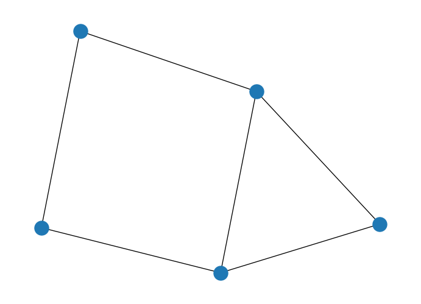
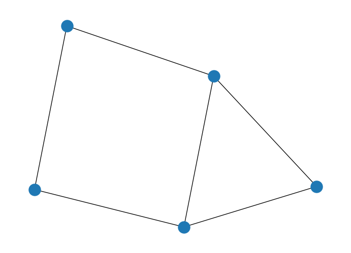
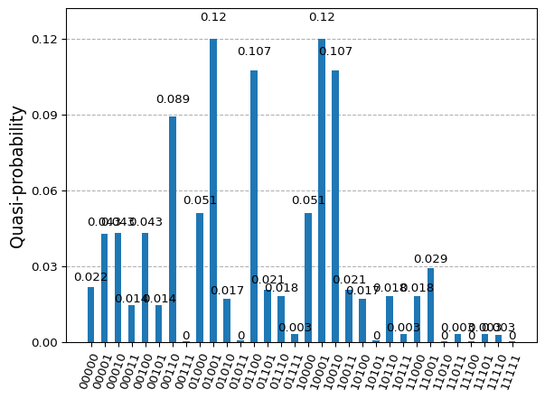
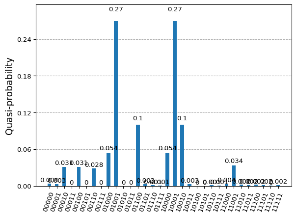
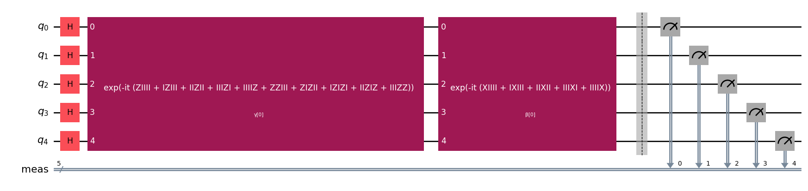
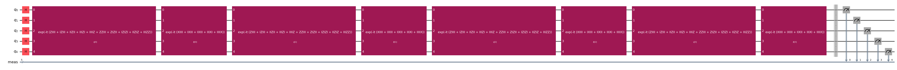
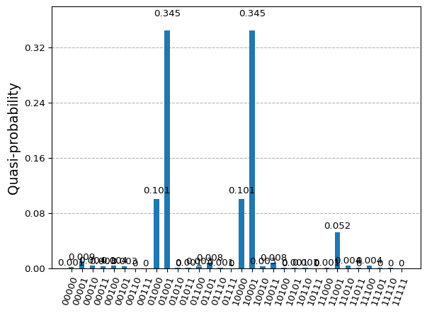

import networkx as nx
# Create empty graph
G = nx.Graph()
# Add edges to the graph (also adds nodes)
G.add_edges_from([(1,2),(1,3),(2,4),(3,4),(3,5),(4,5)])
nx.draw(G)
As we have seen before, QAOA take the best of both worlds (ideally) considering the ansatz out of the AQC but variationaly training it to obtain the best scheduling function out of the free parameters.
Continuing with previous example….
import networkx as nx
# Create empty graph
G = nx.Graph()
# Add edges to the graph (also adds nodes)
G.add_edges_from([(1,2),(1,3),(2,4),(3,4),(3,5),(4,5)])
nx.draw(G)
import numpy as np
from collections import defaultdict
# Initialize our Q matrix
Q = defaultdict(int)
# Update Q matrix for every edge in the graph
for i, j in G.edges:
Q[(i,i)]+= -1
Q[(j,j)]+= -1
Q[(i,j)]+= 2
# Give it also a matrix shape to ease readability
size = G.number_of_nodes()
H_problem = np.zeros((size, size))
for k, v in Q.items():
if not isinstance(k, int):
H_problem[k[0]-1][k[1]-1] = v
H_problemarray([[-2., 2., 2., 0., 0.],
[ 0., -2., 0., 2., 0.],
[ 0., 0., -3., 2., 2.],
[ 0., 0., 0., -3., 2.],
[ 0., 0., 0., 0., -2.]])For this simple example, brute-forcing the solution can be done to have a reference for it.
import numpy as np
def objective_value(x: np.ndarray, w: np.ndarray) -> float:
"""Compute the value of a cut.
Args:
x: Binary string as numpy array.
w: Adjacency matrix.
Returns:
Value of the cut.
"""
return np.dot(np.dot(x.T, w), x)
def bitfield(n: int, L: int) -> list[int]:
""" Get the binary representation"""
result = np.binary_repr(n, L)
return [int(digit) for digit in result] # [2:] to chop off the "0b" part
# use the brute-force way to generate the oracle
L = G.number_of_nodes()
max = 2**L
sol = np.inf
for i in range(max):
cur = bitfield(i, L)
cur_v = objective_value(np.array(cur), H_problem)
if cur_v < sol:
sol = cur_v
print(f'Objective value computed by the brute-force method is {sol}')Objective value computed by the brute-force method is -5.0The main challenge would be understanding if this one is the only solution in our example
x = [0, 1, 1, 0, 0]
print(np.dot(np.dot(np.transpose(x), H_problem), x))-5.0x = [0, 1, 1, 0, 1]
print(np.dot(np.dot(np.transpose(x), H_problem), x))-5.0In fact, for this example we know there are more than one optimal solutions…
from qiskit.visualization import plot_histogram
solution = {
'01101': 0.25,
'10010': 0.25,
'10011': 0.25,
'01100': 0.25,
}
plot_histogram(solution)We would like to fully understand our solution landscape. Quantum Computing may help us by mapping the solution to a more complex superposed state that reveals all potential solutions to our problem.
We will need to build a Hamiltonian that maps our problem.
from qiskit.quantum_info import SparsePauliOp
H_op = SparsePauliOp.from_list(
[
# h
("ZIIII", -2),
("IZIII", -2),
("IIZII", -3),
("IIIZI", -3),
("IIIIZ", -2),
# j
("ZZIII", 2),
("ZIZII", 2),
("IZIZI", 2),
("IIZIZ", 2),
("IIIZZ", 2),
]
)
print(f"Number of qubits: {H_op.num_qubits}")Number of qubits: 5In this case, we will start with the existing Qiskit functionality and do a drill-down to highlight what is done behind the scenes. Qiskit provides a ready to be used QAOA implementation that will only require the and optimizer and a way to extract information out of our quantum device (either Estimator or Sampler primitive).
from qiskit_algorithms.minimum_eigensolvers import QAOA
from qiskit_algorithms.optimizers import COBYLA
from qiskit.primitives import Sampler
optimizer = COBYLA()
sampler = Sampler()
qaoa = QAOA(sampler, optimizer, reps=2)
result = qaoa.compute_minimum_eigenvalue(H_op)/tmp/ipykernel_2881/2458342227.py:6: DeprecationWarning: The class ``qiskit.primitives.sampler.Sampler`` is deprecated as of qiskit 1.2. It will be removed no earlier than 3 months after the release date. All implementations of the `BaseSamplerV1` interface have been deprecated in favor of their V2 counterparts. The V2 alternative for the `Sampler` class is `StatevectorSampler`.
sampler = Sampler()print(result){ 'aux_operators_evaluated': None,
'best_measurement': { 'bitstring': '01001',
'probability': np.float64(0.2817948783547673),
'state': 9,
'value': np.complex128(-10+0j)},
'cost_function_evals': np.int64(603),
'eigenstate': {0: np.float64(0.01352778309218), 1: np.float64(0.030667809935296), 2: np.float64(0.00875166178695), 3: np.float64(0.004401308246446), 4: np.float64(0.00875166178695), 5: np.float64(0.004401308246446), 6: np.float64(0.006331913908777), 7: np.float64(0.000866673111077), 8: np.float64(0.117753568679517), 9: np.float64(0.278717150124201), 10: np.float64(0.007392259674272), 11: np.float64(0.000598052396057), 12: np.float64(0.004920489057293), 13: np.float64(0.003531947534421), 14: np.float64(0.001967097167352), 15: np.float64(0.000115994047358), 16: np.float64(0.117753568679517), 17: np.float64(0.278717150124201), 18: np.float64(0.004920489057293), 19: np.float64(0.003531947534421), 20: np.float64(0.007392259674272), 21: np.float64(0.000598052396057), 22: np.float64(0.001967097167352), 23: np.float64(0.000115994047358), 24: np.float64(0.008240709761946), 25: np.float64(0.073543143426033), 26: np.float64(0.002070616508443), 27: np.float64(0.00061642422225), 28: np.float64(0.002070616508443), 29: np.float64(0.00061642422225), 30: np.float64(0.005118904052806), 31: np.float64(2.9923822764e-05)},
'eigenvalue': np.float64(-7.788465681089685),
'optimal_circuit': <qiskit.circuit.quantumcircuit.QuantumCircuit object at 0x7fa09fd40e60>,
'optimal_parameters': { ParameterVectorElement(β[0]): np.float64(3.7886361684692624),
ParameterVectorElement(β[1]): np.float64(3.5927510410427783),
ParameterVectorElement(γ[0]): np.float64(-1.4487427948505907),
ParameterVectorElement(γ[1]): np.float64(-4.896441361736129)},
'optimal_point': array([ 3.78863617, 3.59275104, -1.44874279, -4.89644136]),
'optimal_value': np.float64(-7.788465681089685),
'optimizer_evals': None,
'optimizer_result': <qiskit_algorithms.optimizers.optimizer.OptimizerResult object at 0x7fa09da2eba0>,
'optimizer_time': 3.6799097061157227}from qiskit.visualization import plot_histogram
counts = {}
for key in result.eigenstate:
key_str = format(key, 'b').zfill(5)
counts[key_str] = result.eigenstate[key]
plot_histogram(counts)
from qiskit.quantum_info import Statevector
from qiskit.result import QuasiDistribution
def sample_most_likely(state_vector: QuasiDistribution | Statevector) -> np.ndarray:
"""Compute the most likely binary string from state vector.
Args:
state_vector: State vector or quasi-distribution.
Returns:
Binary string as an array of ints.
"""
if isinstance(state_vector, QuasiDistribution):
values = list(state_vector.values())
else:
values = state_vector
n = int(np.log2(len(values)))
k = np.argmax(np.abs(values))
x = bitfield(k, n)
x.reverse()
return np.asarray(x)
x = sample_most_likely(result.eigenstate)
print(x)
print(f'Objective value computed by QAOA is {objective_value(x, H_problem)}')[1 0 0 1 0]
Objective value computed by QAOA is -5.0from qiskit_algorithms.optimizers import SLSQP
optimizer = SLSQP()
qaoa = QAOA(sampler, optimizer, reps=4)
result = qaoa.compute_minimum_eigenvalue(H_op)
print(result){ 'aux_operators_evaluated': None,
'best_measurement': { 'bitstring': '01001',
'probability': np.float64(0.3822820659845158),
'state': 9,
'value': np.complex128(-10+0j)},
'cost_function_evals': 294,
'eigenstate': {0: np.float64(0.001420186457824), 1: np.float64(0.009098970858398), 2: np.float64(0.000702880609422), 3: np.float64(0.000637071029132), 4: np.float64(0.000702880609422), 5: np.float64(0.000637071029132), 6: np.float64(0.002301464694241), 7: np.float64(0.000363303000485), 8: np.float64(0.024195940075151), 9: np.float64(0.381989975058994), 10: np.float64(0.000210609774643), 11: np.float64(0.000227994402742), 12: np.float64(0.028956342101656), 13: np.float64(0.015965655003872), 14: np.float64(0.001299196317224), 15: np.float64(1.8218373427e-05), 16: np.float64(0.024195940075151), 17: np.float64(0.381989975058993), 18: np.float64(0.028956342101656), 19: np.float64(0.015965655003872), 20: np.float64(0.000210609774643), 21: np.float64(0.000227994402742), 22: np.float64(0.001299196317224), 23: np.float64(1.8218373427e-05), 24: np.float64(0.005359277192944), 25: np.float64(0.070282850736788), 26: np.float64(0.000979085251103), 27: np.float64(0.000318567428359), 28: np.float64(0.000979085251103), 29: np.float64(0.000318567428359), 30: np.float64(0.000114331598873), 31: np.float64(5.6544609e-05)},
'eigenvalue': np.float64(-9.01597077197887),
'optimal_circuit': <qiskit.circuit.quantumcircuit.QuantumCircuit object at 0x7fa09d8da360>,
'optimal_parameters': { ParameterVectorElement(β[3]): np.float64(3.015958442835535),
ParameterVectorElement(β[2]): np.float64(1.3788747849669465),
ParameterVectorElement(γ[0]): np.float64(-0.7396710438830442),
ParameterVectorElement(β[1]): np.float64(2.7743283751888805),
ParameterVectorElement(β[0]): np.float64(-5.937560379711321),
ParameterVectorElement(γ[1]): np.float64(1.4974160043108034),
ParameterVectorElement(γ[2]): np.float64(-1.1423369104394172),
ParameterVectorElement(γ[3]): np.float64(-3.3616174605248843)},
'optimal_point': array([-5.93756038, 2.77432838, 1.37887478, 3.01595844, -0.73967104,
1.497416 , -1.14233691, -3.36161746]),
'optimal_value': np.float64(-9.01597077197887),
'optimizer_evals': None,
'optimizer_result': <qiskit_algorithms.optimizers.optimizer.OptimizerResult object at 0x7fa0aff291f0>,
'optimizer_time': 2.3217716217041016}counts = {}
for key in result.eigenstate:
key_str = format(key, 'b').zfill(5)
counts[key_str] = result.eigenstate[key]
plot_histogram(counts)
x = sample_most_likely(result.eigenstate)
print(x)
print(f'Objective value computed by QAOA is {objective_value(x, H_problem)}')[1 0 0 1 0]
Objective value computed by QAOA is -5.0optimizer = SLSQP(
maxiter=100000
)
qaoa = QAOA(sampler, optimizer, reps=1)
result = qaoa.compute_minimum_eigenvalue(H_op)
print(result){ 'aux_operators_evaluated': None,
'best_measurement': { 'bitstring': '01001',
'probability': np.float64(0.1465718736914148),
'state': 9,
'value': np.complex128(-10+0j)},
'cost_function_evals': 75,
'eigenstate': {0: np.float64(0.049645952997571), 1: np.float64(0.07411652851427), 2: np.float64(0.00873606429786), 3: np.float64(0.003873132824594), 4: np.float64(0.00873606429786), 5: np.float64(0.003873132824594), 6: np.float64(0.001287374037101), 7: np.float64(0.000170468454723), 8: np.float64(0.091063607764125), 9: np.float64(0.145565260903601), 10: np.float64(0.00484921905886), 11: np.float64(0.000784947429161), 12: np.float64(0.016065402153004), 13: np.float64(0.007863945446879), 14: np.float64(0.000655046947803), 15: np.float64(0.000103713679732), 16: np.float64(0.091063607764125), 17: np.float64(0.145565260903601), 18: np.float64(0.016065402153004), 19: np.float64(0.007863945446879), 20: np.float64(0.00484921905886), 21: np.float64(0.000784947429161), 22: np.float64(0.000655046947803), 23: np.float64(0.000103713679732), 24: np.float64(0.110992612447784), 25: np.float64(0.188471704421024), 26: np.float64(0.006218247306712), 27: np.float64(0.001690331495289), 28: np.float64(0.006218247306712), 29: np.float64(0.001690331495289), 30: np.float64(0.000288747092553), 31: np.float64(8.8773419737e-05)},
'eigenvalue': np.float64(-6.210057551869467),
'optimal_circuit': <qiskit.circuit.quantumcircuit.QuantumCircuit object at 0x7fa09d7818b0>,
'optimal_parameters': { ParameterVectorElement(γ[0]): np.float64(0.7405734727006337),
ParameterVectorElement(β[0]): np.float64(-5.350402898532218)},
'optimal_point': array([-5.3504029 , 0.74057347]),
'optimal_value': np.float64(-6.210057551869467),
'optimizer_evals': None,
'optimizer_result': <qiskit_algorithms.optimizers.optimizer.OptimizerResult object at 0x7fa09da3bce0>,
'optimizer_time': 0.2586548328399658}counts = {}
for key in result.eigenstate:
key_str = format(key, 'b').zfill(5)
counts[key_str] = result.eigenstate[key]
plot_histogram(counts)
x = sample_most_likely(result.eigenstate)
print(x)
print(f'Objective value computed by QAOA is {objective_value(x, H_problem)}')[1 0 0 1 1]
Objective value computed by QAOA is -5.0Let’s check what is going on behind it. We can check the ansatz that QAOA creates.
qaoa.ansatz.draw('mpl', fold=150)
qaoa.ansatz.decompose().draw('mpl', fold=150)qaoa.ansatz.decompose(reps=2).draw('mpl', fold=150)As we can see the ansatz is build following the Adiabatic Quantum Computing scheme where a block of \(X\) rotations is applied, and alternated with the problem hamiltonian (\(Z + ZZ\) interactions) as many times as repetitions are performed.
qaoa = QAOA(sampler, optimizer, reps=4)
result = qaoa.compute_minimum_eigenvalue(H_op)
print(result){ 'aux_operators_evaluated': None,
'best_measurement': { 'bitstring': '01001',
'probability': np.float64(0.29804268652809),
'state': 9,
'value': np.complex128(-10+0j)},
'cost_function_evals': 290,
'eigenstate': {0: np.float64(0.001377798921983), 1: np.float64(0.002070923217), 2: np.float64(0.000335598766781), 3: np.float64(0.000680869500406), 4: np.float64(0.000335598766781), 5: np.float64(0.000680869500406), 6: np.float64(0.000174897649973), 7: np.float64(8.6604514172e-05), 8: np.float64(0.048319067017082), 9: np.float64(0.298040208234321), 10: np.float64(2.1910098407e-05), 11: np.float64(0.00380436803079), 12: np.float64(0.002040561700302), 13: np.float64(0.002145921542405), 14: np.float64(0.000196951172834), 15: np.float64(4.5492155932e-05), 16: np.float64(0.048319067017082), 17: np.float64(0.298040208234321), 18: np.float64(0.002040561700302), 19: np.float64(0.002145921542405), 20: np.float64(2.1910098407e-05), 21: np.float64(0.00380436803079), 22: np.float64(0.000196951172834), 23: np.float64(4.5492155932e-05), 24: np.float64(0.045208243597714), 25: np.float64(0.237868574462453), 26: np.float64(0.000779314674644), 27: np.float64(0.000133461750107), 28: np.float64(0.000779314674644), 29: np.float64(0.000133461750107), 30: np.float64(6.0041437529e-05), 31: np.float64(6.5466911152e-05)},
'eigenvalue': np.float64(-8.085505374007528),
'optimal_circuit': <qiskit.circuit.quantumcircuit.QuantumCircuit object at 0x7fa09c13fd10>,
'optimal_parameters': { ParameterVectorElement(β[3]): np.float64(-2.2625425869626308),
ParameterVectorElement(β[0]): np.float64(-1.9194859077099342),
ParameterVectorElement(β[1]): np.float64(4.744099117316196),
ParameterVectorElement(β[2]): np.float64(5.940790156548785),
ParameterVectorElement(γ[3]): np.float64(3.043601826554701),
ParameterVectorElement(γ[1]): np.float64(1.9848469495046317),
ParameterVectorElement(γ[0]): np.float64(1.4645184371928712),
ParameterVectorElement(γ[2]): np.float64(-4.932211280293242)},
'optimal_point': array([-1.91948591, 4.74409912, 5.94079016, -2.26254259, 1.46451844,
1.98484695, -4.93221128, 3.04360183]),
'optimal_value': np.float64(-8.085505374007528),
'optimizer_evals': None,
'optimizer_result': <qiskit_algorithms.optimizers.optimizer.OptimizerResult object at 0x7fa09c1bbd40>,
'optimizer_time': 2.204228401184082}qaoa.ansatz.draw('mpl', fold=150)
qaoa.ansatz.decompose().decompose().draw('mpl', fold=150)
Obtained solution distribution really points out to the solutions that provide solutions to our problem, superposed in a state that is the one minimizing the outcome of the circuit with respect to the expectation value of the hamitlonian.
counts = {}
for key in result.eigenstate:
key_str = format(key, 'b').zfill(5)
counts[key_str] = result.eigenstate[key]
plot_histogram(counts)
Therefore, is we are able to encode our problem into an Ising Hamiltonian it looks like we could easily design a circuit to obtain the results from the potential solution landscape. We may need to set up the repetitions needed in order to map the optimal parameters to our variationaly trained scheduling function.
qaoa.ansatz.depth()10Small problems will render shallow circuits, but we need to be aware that introducing many repetitions of those blocks or layers, it will require more operations to be squeezed in, the lifespan of the cubits will need to be longer and the more operations we add, more noise it will enter into our final state.